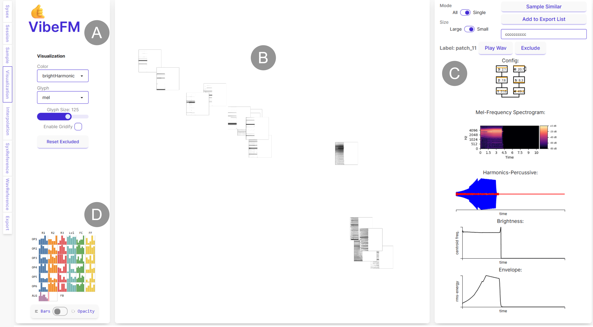

VibeFM: Visual Exploration of FM Synthesis
VibeFM: Visual Exploration of FM Synthesis

(opens in new tab)
Venue. London, United Kingdom (2026)
Abstract. We propose VibeFM, an interactive visual approach for sampling, exploring, and identifying novel synthesizer sounds using frequency modulation (FM). Our approach is based on two steps: First, we systematically sample parameter combinations to create a set of sound samples. We then provide a visual overview that shows each sample as a small visualization and orders them spatially by similarity. Our premise is that, by visualizing key audio features, one can quickly parse a large collection of samples with out listening to all of them. Furthermore, the approach supports serendipitous discovery of new sounds during the creative composition process. Using VibeFM, we created a soundtrack faster than our usual estimated time and also discovered new and interesting sounds. In semi-structured interviews, one professional composer and two experienced musicians found our approach to be a convenient complement to synthesizer programming.
Link to this page: